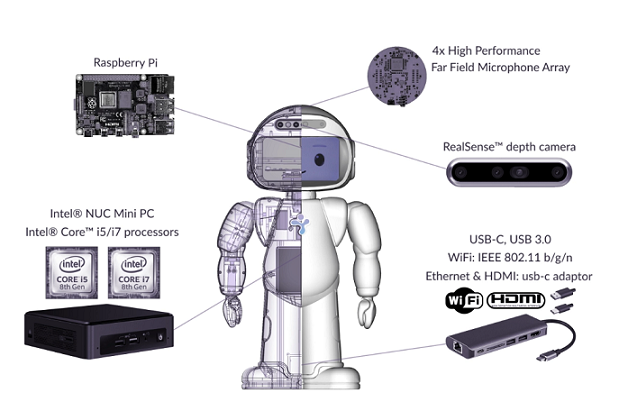

User Manual

QTrobot is a high-end research platform with powerfull computers and state-of-the-art hardware such as 3D camera and far-field michrohone array. It comes with two computers: i) QTRP, a Raspberry Pi based computer to control the main hardware and ii) QTPC, an Intel® NUC i5/i7 PC to provide more computational power and to accelerate software development cycle. Both computers run on Ubuntu/Debian linux operating systems and leverage ROS to offer easy-to-use yet very flexible software atchitecture. QTrobot's hardware is easily extendable via USB-C and USB adaptors, for example, to connect external monitor, keyboard and mouse. QTrobot also provides a rich set of APIs for several programing languages such as C++, Python and JavaScript.
1. QTrobot Architecture
As it is shown in the following diagram, QTrobot consists of two computers, one in the QTrobot head (QTRP) and the other in the body (QTPC), which are internally connected via ethernet cable. All of the QTrobot devices such as display, speakers, microphone and motors are connected to QTRP except the 3D Camera which is connected directly to QTPC. The Wi-Fi of the QTRP is used to create the QTrobot hotspot with the same SSID as the robot’s serial number (e.g. QTRD000101).
Both computers are configured to interact in one ROS environment. Upon starting the QTrobot, QTRP runs the roscore and initializes the ROS environment. It also turn on QTPC via wake-on-lan when the ROS environment is up. You will also find two USB port at the back of the QTrobot. One of the is attached to QTRP and the second one (USB-C) is connected to QTPC. This USB-C port can be used to connect keyboard,mouse and monitor via a USB-C extension hub to QTPC.
Notice
QTRP running roscore and QTPC are connected over LAN cable so you don't need any other configuration or connection to QTRP to access/work with QTrobot's ROS environment. QTPC is already prepared and configured to work with roscore which is running on QTRP and you can access all QTrobot ROS services ands topics.
2. How to work with QTrobot
There are few ways of working with QTrobot. We recommend working on QTPC, which is the fastest and easiest way to start.
[Step 1] Turn on QTrobot
To power the QTrobot on, simply connect the QTrobot's power supply1.This triggers the power on process and your QTrobot becomes ready less than a minute. After powering on, you can see the QTrobot face is on and the motors are in their home position. If the QTrobot is already connected to the power supply simply push the power button to turn on the QTrobot.
[Step 2] Connect keyboard/mouse and monitor to QTPC
Connect keyboard, mouse and HDMI Monitor to your USB-C extention then plug it in the USB-C port at the back of QTrobot.

Notice
If you see that your keyboard or mouse doesn't work. Disconnect the USB-C adapter from the QTrobot, reverse or turn around the connector and plug it back in.
[Step 3] Wait for QTPC to boot
After you turned on your QTrobot it will need some time until your QTPC turns on, because QTRP will turn on QTPC after ROS environment is up. You will see the Ubuntu desktop of QTPC and you can use in the same way you use a standard desktop for development.

[Step 1] Setup your ROS environment
Notice
For this steps you wiil need ROS installed on your computer. If you don't have it please follow this instalation instructions
-
Install QTrobot ROS headers files
Clone QTrobot Software repository.
cd ~/ git clone https://github.com/luxai-qtrobot/software.gitCopy the
headersfolder or make a link in your Catkin source workspace:cd ~/catkin_ws/src ln -s ~/software/headers ./Build the messages in your Catkin worksapce
cd ~/catkin_ws catkin_make -
Configure ROS environment for QTrobot
Connect to the QTrobot Wi-Fi hotspot. Then open a terminal on your PC and run the following command:
Write down or copy IP address that is written of wifi inet (e.g.ifconfiginet 10.42.0.55)wifi0: flags=4163<UP,BROADCAST,RUNNING,MULTICAST> mtu 1500 inet 10.42.0.55 netmask 255.255.255.0 broadcast 10.42.0.255 inet6 fe80::c5ab:2083:f0c2:daa3 prefixlen 64 scopeid 0xfd<compat,link,site,host> ether e4:b3:18:dd:87:31 (Ethernet) RX packets 0 bytes 0 (0.0 B) RX errors 0 dropped 0 overruns 0 frame 0 TX packets 0 bytes 0 (0.0 B) TX errors 0 dropped 0 overruns 0 carrier 0 collisions 0Edit
~/.bash_aliaseson your laptop/PC and add following lines. Change ROS_IP to your IP from last step.source /opt/ros/noetic/setup.bash source ~/catkin_ws/devel/setup.bash ## QTrobot export ROS_IP=<your PC IP address> export ROS_MASTER_URI=http://192.168.100.1:11311To apply this configuration run this command:
source ~/.bash_aliases
[Step 2] Test your setup
Last step is to connect to the QTrobot Wi-Fi hotspot and test your ROS environment. One option is to list all ROS topics that are running on QTRobot:
rostopic list
If everything is working you should see output similar to this one.
/rosout
/qt_robot/audio/play
/qt_robot/behavior/talkAudio
/qt_robot/emotion/show
/qt_robot/gesture/play
/qt_robot/head_position/command
/qt_robot/joints/state
...
or call some of the QTrobot ROS interfaces:
rosservice call /qt_robot/speech/say "message: 'Hello.'"
You will hear QTrobot say Hello.
Powering off QTrobot
To power off the QTrobot simply press the power button on the back of the QTrobot. This will turn off both QTRP and QTPC. Wait enough for QTrobot to turn off before unpluging it from power supply: a blue screen shows up immedietly goes off.
Continue reading
You can follow any of next topics to learn more on how to setup other things on QTrobot, we recommend to continue with How to SSH to QTrobot.
3. How to SSH to QTrobot
To ssh to QTRP, first connect your laptop to the QTrobot Wi-Fi hotspot and run the following command2. You can alternatively run the following command from QTPC's termianl. For the password use qtrobot.
ssh developer@192.168.100.1
Notice
For some older version of QTrobots you need to ssh with qtrobot user instead of developer (i.e. ssh qtrobot@192.168.100.1). For the password use qtrobot.
To ssh to QTPC, first connect your laptop to the QTrobot Wi-Fi hotspot and run the following command2. For the password use qtrobot.
ssh qtrobot@192.168.100.2
4. Connecting to a Home Network and Internet
The older version of QTrobots (which had been released before May 2021) have different operating system for QTRP. Those set of robots (with QTRP verision older than QTRDTP2105) require slightly different set of steps for connecting them to the Internet. Please carefully do the following steps to find the version of your QTRP.
Finding the version of QTRP
If you do not know how to access QTRP, please first read How to SSH to QTrobot.
1. ssh to QTRP and run the folowing command to check the codename of its operating system:
lsb_release -c
2. if the codename is xenial then the version of your QTRP is older than QTRDTP2105.
The following diagram demonstrates a common scenario where different devices (e.g. laptops) are connected to the QTrobot via it's Wi-Fi hotspot. The Wi-Fi of QTRP is setup to operate in AP/STA mode. That means the QTRP's Wi-Fi can be connected to a home router (as Wi-Fi client) and at the same time operates as hotspot (access point).
To have access to the internet on all machines (as depecited in the diagram), the Wi-Fi of QTRP should be connected to the home router. The internet from the home router, therefore is shared to all other machines (including QTPC) via QTRP. The green arrows shows the direction and how internet shared between QTRP, QTPC and any other devices connected to QTrobot hotspot.

Therefore, you need to connect the QTRP to your home router's Wi-Fi. To do that do the following steps:
[Step 1] access QTRP via ssh
Please see SSH to QTRP if you have not done this before.
[Step 2] configure the wpa_suplicant for wlan0
Edit the /etc/wpa_supplicant/wpa_supplicant-wlan0.conf file to update ssid and psk accordignly.
sudo nano /etc/wpa_supplicant/wpa_supplicant-wlan0.conf
set the ssid (your router ssid) and psk (your router passphrase) of your home router setup:
country=LU
ctrl_interface=DIR=/var/run/wpa_supplicant GROUP=netdev
update_config=1
network={
ssid="<your router SSID>"
psk="<your router passphrase>"
key_mgmt=WPA-PSK # see ref (4)
}
[Step 3] reboot the QTrobot
fron the ssh terminal of QTRP type:
sudo reboot
After the reboot, QTRP gets internet connection from your router and will automaticly share it with QTPC and any other devices connected to QTrobot Wi-FI hotspot.
Warning
Do not create or change any other files related to wpa_supplicant or systemd network! this may break your QTrobot network setup!
Warning
Do not use the QTRP Wi-Fi to connect to a network for QTrobot older than QTRDTP2105.
Instead, use Wi-Fi from QTPC as explained bellow!
The following diagram demosntrates a common scenario where different devices (e.g. laptops) are connected to the QTrobot via it's Wi-Fi hotspot. To have access to the internet on all these machines, the Wi-Fi of QTPC should be connected to the home router. The internet from the home router, therefore is shared to all other machines via QTPC. The green arrows shows the direction and how internet shared between QTPC, QTRP and any other devices connected to QTrobot hotspot.

Therefore, all you need to do is to connect the QTPC to your home router's Wi-Fi. After your QTPC gets internet connection, it will automaticly share it with QTRP and any other devices connected to QTrobot Wi-FI hotspot.
Connect to a wireless network from Ubuntu desktop
- Access the QTPC ubuntu desktop (see Working on QTPC)
- Open the system menu from the right side of the top bar .
- Select Wi-Fi and click Select Network.
- Click the name of the network you want, then click Connect. ...
- If the network is protected by a password (encryption key), enter the password when prompted and click Connect.
5. QTRobot Autostart scripts
Autostart scripts are simply some bash scripts which are executed at QTrobot startup time. There are different set of autostart scripts, one for QTRP and the other set for QTPC.
Generally, these scripts prepare QTrobot network, setup ROS environment and launch specefic ros nodes on each machine. For example, autostart scripts of QTRP, run roscore and launch QTrobot motor and other important controllers. Moreover, as it can be infered from QTrobot Architecture, one of the autostart scripts of QTPC is responsible to launch the qt_nuitrack_app node which provide ROS interface for Nuitrack skeleton tracking using 3D camera.
Therefore, it is very important that you completely understood the purpose of each script before disabling or modifying the QTrobot autostart behavior.
-
How QTrobot autostart scripts work
For both QTRP and QTPC, the autostart scripts are located in
~/robot/autostartfolder. The scripts are run by linux Cron job scheduler. In fact, a specific cron job is configured to run theautostart_screens.shscript at boot time. The other scripts are launched byautostart_screens.shand their output are redirected to the corresponding log files.__________ ______________________ ___________________ | Cron job | ---> | autostart_screens.sh | ----> | start_script_1.sh | ¯¯¯¯¯¯¯¯¯¯ ¯¯¯¯¯¯¯¯¯¯¯¯¯¯¯¯¯¯¯¯¯¯ | ¯¯¯¯¯¯¯¯¯¯¯¯¯¯¯¯¯¯¯ | ___________________ └--> | start_script_2.sh | ¯¯¯¯¯¯¯¯¯¯¯¯¯¯¯¯¯¯¯ ... -
How to check the log files of autostart scripts
All programs/ROS nodes which are run by QTrobot autostart scripts redirect their standard output (info/war/error messages) to their corresponding log file. These log files can be found under
~/robot/autostart/logsfolder. -
How to run my own script at startup
For example, to run your custom script on QTPC at the startup, you need to first create a startup script file and call it from
autostart_screens.sh. Do the following steps:[Step 1] Create custom startup script
open a terminal on QTPC and create a bash script file. Let's name it
start_my_script.sh.with the following example content:nano ~/robot/autostart/start_my_script.sh# !/bin/bash source /home/qtrobot/robot/autostart/qt_robot.inc SCRIPT_NAME="start_my_script" LOG_FILE=$(prepare_logfile "$SCRIPT_NAME") { prepare_ros_environment wait_for_ros_node "/rosout" 60 # ... # add your main code here /usr/bin/echo "This is my script!" # ... } &>> ${LOG_FILE}[Step 2] Add it to
autostart_screens.shCarefully edit the
autostart_screens.sh:nano ~/robot/autostart/autostart_screens.shTo add your own script (e.g.
start_my_script.sh) you can simply add the following line to the buttom ofautostart_screens.shright before the} &>> ${LOG_FILE}line. Theautostart_screens.shshould look like the following:{ wait_for_network ... ... run_script "start_my_script.sh" } &>> ${LOG_FILE}[Step 3] Reboot and check
Reboot the QTrobot. After reboot, your script should be executed on startup of QTPC. You can now check the log file of your script:
cat ~/robot/austostart/logs/start_my_script.log
-
Only use the provided power supply with your QTrobot. ↩
-
Windows users can use Putty (www.putty.org) ↩↩